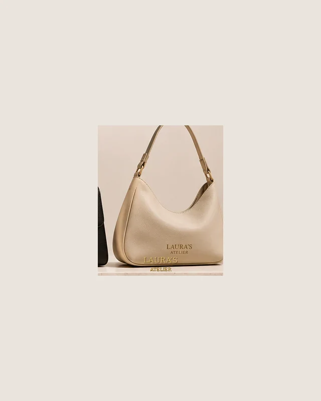

Esenciales de autor
Mila
Mila es un diseño visual de esenciales de autor, creado para el universo editorial de Laura’s Atelier.
Acabado de piel de apariencia lisa y herrajes dorados (representación visual).
Detalles del concepto
Imagen conceptual generada con IA. No representa un artículo fabricado.
Imagen original ilustrada. No representa un artículo fabricado.
Proyecto académico ficticio: no se aceptan pedidos ni pagos.